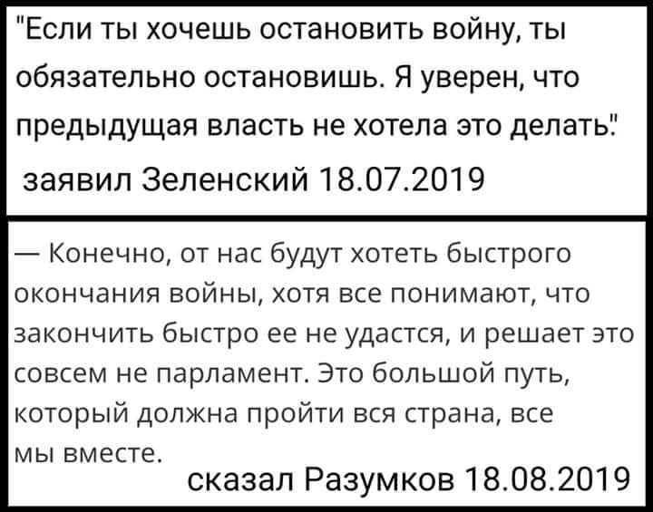

01.08.2019
Зеленский назначил главой знаменитой ДУСи зятя продюсера «Лиги смеха» »»»
На вулицю без документів – не можна: патрулі НГУ оглядатимуть українців і застосовуватимуть вогнепальну зброю на вулицях »»»
Нескладно здогадатися кого тепер нацгвардійці будуть хапати першими – п’яних мажорів чи активістів з протестами? Прецеденти вже є. Згадаймо Рівне.
Лобісти Зеленського у США відзвітували про витрати на підняття його іміджу »»»
UPD: "Я цього не робив. Мені це не потрібно", - Зеленський про залучення послуг американських лобістів »»»
Для повної гармонії залишилось тільки додати "Нас там нєт!"
UPD: Зеленський брехав виборцям: оприлюднено офіційний документ »»»
02.08.2019
Станом на початок серпня Міноборони не уклало контрактів на декілька мільярдів гривень в рамках держоборонзамовлення »»»
Так а для чого гроші витрачати? На колінах стояти й бесплатно можна!
UPD: У Міноборони анонімно говорять про зраду: Зупинено всі контракти на переозброєння ЗСУ, зависли конче потрібні засоби оборони на мільярди »»»
Зеленский побикував на Франківщині — «повісив» 175 мільйонів на нардепа Андрія Іванчука »»»
Зеленський пропонує гарантувати компанії Коломойського повернення інвестицій у реконструкцію аеропорту Івано-Франківська »»»
Компанії Коломойського? А чому саме його компанії? Без тендерів? Без конкурсів? Отак просто взяти і запропонувати? А як же епоха "чесності", "прозорості", "без кумівства", "без договорняків"?
Печерський райсуд постановив виплатити Портнову 7 млн грн з держбюджету »»»
Любитель РПЦ і “совка” може стати Головнокомандувачем ЗСУ »»»
На кордоні з Польщею збільшилася кількість відмов у в’їзді українцям »»»
Кордон має бути відкритим для росіян-друзів – Дейнеко »»»
Ну і як відрізняти друзів від "туристів", що їхатимуть в Україну для організації "руской вєсни"? Чи збільшення потоку людей через державний кордон для людини, яка підозрюються у кришуванні контрабанди є просто засобом збільшення заробітків? Страшну ціну ми можемо сплатити за цей корупційний спосіб!
03.08.2019
Відвести ВСУ за межі Донецької і Луганської областей: у війську ширяться недобрі чутки »»»
Скільки грошей українців вже віддав Зеленський своєму спонсору Коломойському - цифри »»»
04.08.2019
«Слуга народу» застосує штучний інтелект «Великий брат» для виявлення аномалій у Раді »»»
Депутатів беруть під тотальний контроль! Щоб голосували так, як треба!
Месяц работы Зеленского стоил украинцам 78 млн грн: на 12,7 млн дороже, чем Порошенко »»»
Чому ж презедент найбіднішої країни Європи витрачає на себе в 100 разів більше ніж президент найбагатшої країни Європи?
А "зубожілі" зе-виборці щось мовчать. І "барига" у них, як і раніше - Порошенко!
уЗеленского остановлены все контракты на перевооружение украинской армии »»»
“Слуга народу” започатковує Офіс навчання і розвитку партії »»»
Сподобалося навчатися в елітних отелях за кошти платників податків!
До побачення, Європо! Вітаємо проросійського диктатора! »»»
То ли совок, то ли мини-рашка »»»
05.08.2019
Слуги народу вважають, що присутність агресора у ПАРЄ Україні аніяк не заважатиме »»»
UPD: Боротися за запровадження санкцій проти російської делегації в ПАРЄ, слуги, вочевидь не збираються »»»
В Офісі президента перестали приймати електронні листи від громадян »»»
От вам і "країна в смартфоні"!
UPD: Укрпошта тролить приtheдента:
Окружний адмінсуд Києва відкрив справу щодо скасування заборони КПУ »»»
Разумков: Проблема Донбасу не вирішується законами »»»
Опа! Хто б міг подумати! А ви ж говорили, що війна йде через те, що Порох на ній наживається! Що, і тут збрехали?
UPD: Нусс: после такого заявления Разумков должен попросить прощения у Порошенко и его избирателей »»»
“Вони нікого не вбивали”: Дубінський пропонує торгувати з бойовиками »»»
Зеленський досі не знає, хто є ворогом України?! »»»
06.08.2019
Зеленский зливає держтаємниці російським спецслужбам через «Яндекс Диск»? »»»
Все що у Зеленского в телефоні - тепер в руках ФСБ? До того ж з весни 2017 в Україні діють економічні санкції на фірму «Яндекс». Вона була визначена РНБО, як така, що «загрожує національній безпеці» України. Зеленский знову порушує законодавство України!
У «Слузі народу» вважають Портнова ідеальним кандидатом на посаду голови ГПУ »»»
Якщо хтось забув, то саме портнов зробив так, щоб суди лягли під овоча, саме він пропихнув зміни до конституції щоб овоч отримав диктаторські повноваження, саме портнов написав диктаторські закони 16 січня, саме він координував вбивства на Майдані, а потім допомагав здавати Крим...
Авіакомпанія Коломойського виграла тендер на президентські авіаперевезення »»»
Яка несподіванка! І, головне, в чесній конкурентній боротьбі! :)
Коломойський використовує методи "народного обурення" на користь своїх заводів »»»
Внаслідок обстрілів під Павлополем загинули четверо українських бійців »»»
"Главноє ж пєрєстать стрєлять"! Перестали! Маємо "перемир'я", якого інша сторона дотримуватися не збирається!
UPD: Саме завдяки тиші росіяни змогли підкрастися і взяти точний приціл, - Бутусов про загибель морпіхів »»»
UPD: Зеленський прокоментував загибель українських воїнів »»»
UPD: Зеленський провів телефонну розмову з Путіним після загибелі чотирьох українських військових на Донбасі »»»
"Президент України зазначив, що просив свого російського колегу терміново вплинути на те, щоб та сторона просто припинила ці дії, це не іграшки". Що, блд? Яка ще "та сторона"? Росія якраз і є "ТА СТОРОНА"! До дебіла вови це ще не дійшло???
UPD: В ответ на просьбу Зеленского повлиять на боевиков Путин попросил особый статус для "ЛДНР" »»»
UPD: Глава «ЛНР» запросив Зеленського на переговори, «щоб зупинити це божевілля» »»»
А чьо? Пагаварім?
UPD: Франція не підтримує ідеї засідань в "нормандському форматі" »»»
UPD: Віталій Портников: Макрон не допоможе Зеленському »»»
Що ж: підведемо підсумки!
Вовочка побіг плакатися до главаря банди, щоб його бандити не дуже сильно бандитствували.
В результаті:
Путін - послав на...
Меркель - послала на...
Макрон - послав на...
Розстановки міжнародних інтересів Зеленський начисто не розуміє
Вовочка - просто геній міжнародних переговорів! Схоже, його кричуща некомпетентність дуже дорого коштуватиме Україні! Хоча, можливо, у руйнуванні міжнародної підтримки України і полягає його основна задача?
UPD: У Держдепі відповіли на ініціативу Зеленського розширити нормандський формат переговорів »»»
От і в США Вову теж послали... Це успіх!
UPD: Ты дошел до края, Верховный! Письмо отца морпеха »»»
Ні, Верховний! Через твоє "Пєрєстать стрєлять!" ти тепер не головнокомандувач! Ти тепер співучасник вбивства наших захисників!

UPD: Вчера Зеленский вбил очередной клин между собой и армией »»»
UPD: Зеленский начал поддерживать тезис Кремля о «гражданской войне» и превращать Путина в миротворца »»»
UPD: “Ми на межі зради національних інтересів” – запорізькі військові про брифінг Зеленського »»»
UPD: Зеленский озвучил Украине условия капитуляции перед Россией »»»
UPD: Арестович назвал главную ошибку Зеленского - уже к декабрю все выйдет из-под контроля »»»
П'ять (!!!), п'ять довгих довбаних років Україна доводила світовій спільноті, що росія - агресор. Тепер наш пизидент робить усе, щоб переконати усіх й тому, що росія - ніякий не агресор, а просто має вплив на бойовиків. В Україні ж "ґражданская война", так же?
ДБР перевіряє, чи не порушив Порошенко правила перетину кордону під час поїздки на Мальдіви »»»
Коли коту нема чим зайнятися, то він хоч ... лиже! Як же ж хочеться знайти ну хоч що-небудь, ну хоч з якогось сміховинного приводу! Ну хоч щось накопати на п'ятого Президента!
UPD: У Порошенка відреагували на нові провадження: Портнова чекає розчарування »»»
“Гра в піддавки”: чи справді Україна послаблює позиції на Донбасі »»»
Військові експерти попереджають про РЕАЛЬНУ загрозу повномасштабного вторгнення в Україну!
07.08.2019
В «Слуге народа» признали, что часть их депутатов - с пророссийской позицией »»»
Омеляна просили не критикувати Зеленського »»»
Ну це ж Порошенка можна було і критикувати, і лайном обливати, і наклепи на нього зводити! А от Вовочку - ніт! Не можна! Священна корова, блд!
Андрій Садовий продає медіахолдинг «куму Путіна» Медведчуку »»»
Той випадок, коли бажання влади затьмарює усе!
UPD: «Це вже діагноз!»: львів’яни про «рускій мір» Садового »»»
Ватажки угруповання "лнр" розгулюють Станицею Луганською і погрожують журналістам
А що ж СБУ? Спить? Чи чекає, поки пизидент зателефонує Баканову "по поводу етого чьорта"? От вам і результати "нової політики"! "Сламалі сістєму?"
UPD: В ОБСЄ були б істерики, якби Україна дозволила собі таке хамство – Геращенко стосовно провокації в Станиці »»»
Зеленський призначив у Комісію з правової системи фігурантів розслідувань Bihus.Info »»»
Еге ж! Зовсім "нові" люди, зовсім "не заплямовані" ані корупцією, ані співпрацею з режимом Януковича!
Рябошапка виступає за ліквідацію військової прокуратури »»»
Для чого нам підсилення правового поля у військовій сфері? Ми ж все одно будемо "переставати стріляти" й капітулювати перед путіним!
7 побед Коломойского при президенте Зеленском. Тендеры и судебные решения на миллиарды гривен – что хорошего произошло для бизнеса олигарха этим летом »»»
08.08.2019
Пизидент в Туреччині: »»»
► "Президент-комик приезжает в Анкару" заголовок турецкой газеты SABAH. Издание принадлежит зятю Эрдогана »»»
Це неймовірний успіх зеленської дипломатії! Ти, Вова, ніхто і звати тебе ніяк.
► Україна спростить отримання дозволу на відвідання Криму переселенцям – Зеленський »»»
Що воно меле! Переселенці-громадяни України і так відвідують Крим БЕЗ ДОЗВОЛІВ! Тепер треба буде брати дозвіл? У кого? У російських окупантів? Це уже часткове визнання окупації!
► Зеленський заблукав на килимовій доріжці у Туреччині »»»
► "Рук не хватит" - Эрдоган публично опустил Зеленского »»»
Так потрібно ж не браслетики носити, а РОБИТИ щось реальне для звільнення! А так вовця вирішив на жалість надавити? Не проканало! Ердоган миттєво вмазав вовці по-повній!
Обличчя президента Туреччини, коли йому доводиться тиснути руку клоуну, який рік тому сказав: "Эрдоган - усатый таракан"...
► Зеленський має намір легалізувати в Україні азартні ігри »»»
Цікаво було б дізнатися, на чию користь буде таке рішення? Хто в Україні володіє п'ятизірковими готелями?
► Перший візит Зеленського до патріарха Варфоломія і перші непорозуміння. Що пішло не так? »»»
Камнянда пизидента навіть документ для підпису підготовити не спромоглася! А що тоді можна говорити про більш серйозні угоди!
UPD: Патріарх Варфоломій популярно пояснив Зеленському, що він може зробити зі своїми церковними ініціативами від Московського патріархату »»»
UPD: Після цього, кажуть, Варфоломій пизидента просто вигнав! »»»
► Кудись зникли аеропорти, порти і тисячі кілометрів доріг: Омелян прокоментував заяви Зеленського у Стамбулі »»»

Пизидент поняття зеленого не має, що робиться в Україні! "Здєлалі іх вмєстє?"
Скандалу як не було: у Туреччині Зеленського супроводжує глава «Укроборонпрому» Букін »»»
Так що, брехня про Свинарчуків уже не в моді? Відслужила своє? Тепер керівник свинарчуків уже шанована людина?
На фото обведений кружечком
Суд відпустив сепаратистку, яка закликала відокремити Донбас від України і зберігала вибухівку »»»
Російським авіакомпаніям відкрили небо над Львовом та Луцьком? »»»
3,315 млн грн, — фільм компанії, яка належала Зеленському, претендує на держфінансування »»»
А Вова ж зовсім ніякий не "барига"!
UPD: Лох приплыл в руки »»»
Разумков заявив, що у Зеленського є високі моральні принципи »»»
Виявляється, увесь цей треш - це, виявляється, "моральні принципи"!
НАБУ не знайшло підтверджень, що вугілля в Україну привозили з Роттердама »»»
Вони реально думають, що "Роттердам+" - це не назва тарифного плану, а справжній шлях транспортування?
Реванш продолжается: против главы СБУ Грицака открыли уголовное дело »»»
09.08.2019
Суд звільнив від покарання за розгін харківського майдану полковника міліції »»»
Російські пропагандисти уже вікрито походжають вулицями Києва й вимагають відміни мовних квот та закону про мову, щоб у них була можливість відкрити в Україні кремлівсько-газпромівський пропагандистський канал (!!!) »»»
А СБУ у нас ще є? Не тільки зі своїми пропагандонами не боремося, ще й "запорєбрікових" обслуговувати будемо?
UPD: Главред «Эха Москвы» об открытии бюро в Украине: «Мы уже там и разрешение нам не нужно»" »»»
UPD: Венедиктов уверен что украинцы забудут об убитых Россией воинах »»»
UPD: А зараз, гаспада ценітєлі хароших русскіх, увага на екран. Головний редактор «незалежного» радіо «Ехо Москви» Алєксєй Венедиктов, який хоче відкрити філію в Україні й для цього вимагає змінити наше мовне законодавство, толкаєт рєчь про «гражданскую войну» та провину України »»»
А офіційної реакції на заяви цієї рашистської скотини як не було, так і нема!
Як до офіціантів? Журналісти обурені ставленням до них команди Зеленського »»»
А оце уже весело! Коломойські підстилки з Г+Г обурюються поганим до себе ставленням? До журналістів можна ставитися з повагою, а до журнашлюх - тільки так! Диви, гідність у них прокинулась! :D
Окупанти знову порушили перемир'я на Донбасі »»»
Ну що, вовочка? Пагаваріл? Ще зателефонуєш путіну і попросиш не дуже сильно стріляти?
Маріупольський суд випустив із СІЗО двох терористів »»»
Суд зобов'язав НАБУ відкрити кримінальні справи проти очільника СБУ Грицака »»»
У Зеленского анонсировали пресс-конференцию по случаю 100 дней президентства »»»
Готуйте вуха, зефілітики! Розтягуйте їх якнайсильніше! Лапші на них буде навішано багато!
Депутатов партии Слуга Народа обвинили в коррупции в Харькове. Владимир Зеленский убежал
10.08.2019
Партія Вітренко виграла суд у Мін’юсту »»»
Декомунізація? Нє, нє слишалі!
Мы на пороге большого слива Украины »»»
Станицу Луганскую сдали террористам »»»
11.08.2019
Хроника одного Пизидента ... »»»
Марш захисників України: “Слуги народу” ігнорують ветеранів — Нам просто "призначили" час, не спитавши» »»»

А це - ще один "привіт" нашим "любим" журнашлюхам. Тепер уже від нової команди:
А правду тепер будете дізнаватись зі змонтованих, яскравих відосіків зе-каналів!
Публіка в Генічеську як у зоопарку прийшла подивитися на свого гідранта, як на екзотичну тваринку. А може, це якраз Зеленський приїхав подивитися?
Вид из зоопарка. Гидрант со свитой приехали посмотреть на экзотических зверушек. Биологический вид "зефил обыкновенный восторженный"
12.08.2019
Сто дней по Гидранту »»»
Портнов передав матеріали "справи моряків" Росії »»»
Президент Трамп, заявив на галявинці Білого Дому, що Зеленський домовиться з Путіним »»»
Наорал, нагадил, улетел: шоу Зеленского в Житомире не вызвало энтузиазма »»»
“Слуга народу” фактично ліквідовує Комітет з питань культури і духовності »»»
“Слуга народу” не хоче бачити Забродського головою комітету нацбезпеки »»»
“Слуга народу” висуватиме на цю посаду Олександра Завітневича. Він директор ТОВ “Смілянський ливарний завод”, а також чоловік однокласниці президента Володимира Зеленського. Що, кумівства більше не буде?
Американці не розуміють, чому Зеленський призначає колишніх корупціонерів »»»
13.08.2019
Зеленський спростив надання українського громадянства росіянам »»»
Тепер усі агенти ФСБ - велкам!
UPD: Російські “опозиціонери” можуть сформувати нові осередки сепаратизму в Україні »»»
UPD: Безсмертний: Указ Зеленського про спрощене надання українського громадянства росіянам є незаконним »»»
UPD: Догралися! Після указу Зеленського, українці можуть втратити безвіз »»»
"Європейці стурбовані тим, що Україна може стати перевалочним пунктом для просування агентури і терористичних груп московитів в країни ЄС, використовуючи українські паспорти". Що, здобули?
Суд в Мариуполе отпустил на свободу боевиков «ДНР» »»»
Зеленський звільнив Романа Безсмертного з посади представника України у ТКГ у Мінську »»»
Безсмертний почав говорити те, що не до вподоби узеленським?
UPD: “Він або ідіот, або дурак”: Безсмертний щодо рішення Зеленського звільнити його з посади »»»
UPD: У Зеленського про звільнення Безсмертного: Кучма набирає ефективнішу команду »»»
Зеленский назначил Богдана главой комиссии по госнаградам »»»
Тепер люстрований чиновник Януковича вирішуватиме, кого відзначати державними нагородами? Ідеали Майдану на ділі?
Хроніка одного преЗЕдента »»»
UPD: Зеленский использует увольнение чиновников для пиара и расстановки своих людей »»»
Новий очільник Житомирщини виявився “бомжем” з елітними годинниками та великою кількістю готівки »»»
Ще одне "новає ліцо", в декларації нема ні про нерухомість ні про авто, зате є багато готівки в доларах та євро, ну і без елітного годинника ну ніяк. Та ще й брат цього "нового ліца" працює з Коломойським
14.08.2019
Десятки «Градів» і танків: бойовики підігнали до усієї лінії розмежування важке озброєння »»»
І що ж гідрант? Може скликає РНБО? Та ні! Корчить з себе "крєпкого хозяйствєнніка" і гастролює по країні, розганяючи чиновників! Щоправда, чиновники ці кладуть на нього х... і звільнятися тотально відмовляються.
Путин полетит к Макрону на один день. Будут говорить об Украине »»»
Говорити про Україну без України при гідранті стає вже нормою. Поки пизидент гастролює по країні й звільняє лісників, Україна остаточно перестала бути об'єктом міжнародної політики! Все! Нашу долю вирішать без нас! Наголосували!
Окружний адмінсуд відновив люстрованого замгенпрокурора »»»
Тепер почнуть всіх люстрованих поновлювати, вони будуть "новими ліцами" зі своїми старими мордами. Так скоро і з беркутівців зроблять "героїв", а майданівців назвуть "провокаторами"
Міноборони припинило фінансування розробок нових видів бронетехніки »»»
UPD: Укроборонпром звинувачує МОУ у спробі знищити Харківське конструкторське бюро »»»
У Зеленского создадут «Роскомнадзор», который будет блокировать неугодные режиму зебень интернет-издания »»»
15.08.2019
Штаб ООС занижает количество обстрелов »»»
Армію демонтують, демотивують, дискредитують »»»
Партія "Слуга народу" не дала жодного голосу за збереження комітету у справах ветеранів »»»
Публика заждалась. Зачем Зеленскому срочно понадобилась жертва в виде Грымчака »»»
UPD: У Гримчака вилучили не півмільйона доларів, а календарики »»»

UPD: ГПУ перекваліфікувала справу Гримчака, тепер його підозрюють у зловживанні впливом »»»
Коли немає чого "припаяти", а дуже хочеться - тоді й з'являються незрозумілі звинувачення в "перевищенні повноважень" або в "зловживанні впливом"
Корегувальник вогню по мікрорайону Східний в Маріуполі, винний у загибелі 30 мирних жителів вийшов на свободу »»»
16.08.2019
ДБР за позовом соратників Медведчука розслідує “узурпацію влади” Порошенком »»»
Це не просто відкат назад, а відкат у початок 2000-х або навіть кінець 90-х... Вова, які в жопу "новиє ліца", ти, потвора, витягнув усі старі харі, усі які міг!
В ОП підтвердили, що для менеджера Пінчука створять окреме міністерство »»»
У нас нема грошей на ветеранів, нема грошей на парад, але є гроші на окреме міністерство для людини олігарха Пінчука, гідрант же обіцяв своєму стаду, що він буде рішуче боротися з олігархами!
Журналісти "Прямого" заявили про спробу рейдерського захоплення телеканалу та тиск на нього з боку зеленої влади »»»
Офіс президента заблокував кошти на дитячі садки, медицину та благоустрій »»»
UPD: У Зеленського пояснили, чому заблокували фінансування містам »»»
Оце правильно! Оце по-новому! Щоб не розкрадали бюджетні кошти, виявляється, треба просто припинити фінансування з бюджету будь-чого! Нема грошей - нема чого розкрадати! Шах вам і мат, порохоботи! А ви до такого й не додумались! От тільки для чого нам тоді НАБУ, КРУ тощо?
UPD: Бєнєсуела перестає бути жартом »»»
Держава переходить на ручне керування ОПи. Децентралізація згортається! За фінансуванням чого-небудь знову треба їхати на поклон в Київ! Реформи скінчилися!
UPD: Кабмін не блокуватиме фінансування міст попри прохання Богдана »»»
UPD: В партії "Слуга народу" здивовані втручанням Офісу президента у розподіл фінансування на міста і села »»»
Та ви шо?
Потемкинские деревни для Зеленского »»»
Такий вигляд має афера Хомчака з "будиночками" для військових
UPD: "Хватит пары попаданий": ВСУ разнесли "домики Зеленского" для фронта »»»
Грошей немає: Повітряні сили відмовились від тренажерів для зенітних установок »»»
UPD: Хроніки окупації. Тренажерів ЗРК «Бук-М1» не буде, тренажерів С-300 теж не буде через скорочення видатків зебенями »»»
Режим Зеленского скасував вже другий тендер на закупівлю тренажерів з тренувань для знищення ворожих повітряних цілей
Пророссийским участникам событий 2 мая 2014 года в Одессе назначили залог: они могут выйти на свободу »»»
В Офісі Президента стверджують, що Зеленський є головним райтером своїх промов »»»
Так он воно що! Ось, виявляється чому гідрант навіть по бумажці два слова зв'язати не може! Це усе пояснює!
У Зеленського відмовилися від ідеї розпродажу авіапарку. Навпаки збільшать »»»
Сцарь зебілоїдів бажають літати з комфортом, тепер питання, так хто там "барига"?
17.08.2019
Зеленський вже уявляє себе царем, який уже сам вирішив, хто винен у пожежі в одеському готелі "Токіо Стар" і наказує холопам, кого потрібно покарати. Презумпція невинуватості? Суд? Ні, не чули!
UPD: «Без права выхода на свободу»: суд принял решение по владельцу «Токио Стар» »»»
І миттєво кинулися холопи виконувати волю царя-батюшки! А то ж як! Інакше ж "галава с плєч"!
Портнов подав ще один позов проти Порошенка »»»
СБУ закрила справу про держзраду Портнова »»»
От як корисно мати друга дитинства на посаді голови СБУ!
UPD: 5 млн грн на адвокатів, 1,8 млн грн за послуги психолога. Опубліковано рішення суду про виплату державою Україна компенсації Портнову »»»
Готуйтеся! 100 днів презЕдента уже близько! Очікується випадіння кількох тон добротної локшини на вуха 73% лохторату
UPD: Зеленський планує дати обіцяну до 100 днів президентства пресконференцію в жовтні »»»
"А снідать будете увечері!" Приблизно так!
Російські гроші для європейських політиків не пахнуть кров'ю українців »»»
18.08.2019
Разумков: 50 тысяч гривен зарплаты для депутатов Рады слишком мало »»»
А як кричали! Як кричали про несправедливо високі зарплати депутатів! А тепер, виявляється, що 30 тисяч зарплати депутата ВР - це багато, а 50 тисяч - це мало? Що ж, 73% недоумків, привітайте себе: вас розвели як лохів!
Депутат із партії «Слуга народу» назвав журналістку НВ «тупою вівцею» »»»
UPD: У “Слузі народу” підтримали Бужанського, який обізвав журналістку ” вівцею” »»»
А що ж наші журнашлюхи? Протестують? Обурюються? Та ні! Мовчать, як лайна води в рот набрали!
UPD: “Не годуйте клоунів”: журналістка НВ висловилась про Бужанського, який її образив »»»
У Запоріжжі Зеленський рекламує шаурму »»»
Що ж, Вован. Ти здобув! Тепер у народній пам'яті ти завжди будеш асоціюватися з шаурмою.
Танцював і курив кальян: глава Офісу Зеленського Богдан «тусив» на фестивалі »»»
Усі ж державні справи зроблено! Еге ж!
19.08.2019
Компанію ветеранів АТО не допустили на міжнародний форум через Зеленського »»»
Воно так до усрачки боїться військових, що намагається під будь-яким приводом їх уникати. Дезертир боїться зустрітись з ветеранами, боїться людей, боїться своєї тіні, так може йому на вулицю не виходити, бо там теж багато гострих предметів... Сцикло через свої страхи вже псує людям бізнес!
Донбас і Крим не хвилюють! В порядку денному переговорів Зеленського і Натаньяху лише економічні питання »»»
Очевидно, задача нашого пизидента якраз і полягає в тому, щоб ЗНЯТИ питання Криму і Донбасу з міжнародного порядку денного
Путь для наступления войск РФ освобожден: военные ВСУ убрали практически все заградительные минные поля »»»
Путін заявив, що йому починає подобатися ситуація в Україні »»»
Звичайно подобається, тут можна подивитись на останні призначення, на те, як ведуть себе слуги урода, як гідрант займається чим завгодно тільки не тим, що потрібно Україні!
Чергова тупорила ідея Зеленського »»»
Ізраїль, який не має жодних, ані економічних, ані військових можливостей натиснути на РФ, і, навпаки, зацікавлений у допомозі Путіна в тиску на Іран, буде посередником у нашому конфлікті?
За результатами наради під головуванням Президента України напрацьовано механізми, що допоможуть зменшити тарифи на електроенергію для непобутових споживачів майже на 20% »»»
...тобто для підприємств Коломойського, Пінчука та інших. Зе-барани можуть курити бамбук далі. Їх знову кинули. Що і треба було довести!
20.08.2019
Викривачі можуть стати важливим інструментом подолання корупції за умови їхньої належної мотивації й захисту з боку держави »»»
"Завєтам Сталіна вєрни!" ОПа готується до запровадження в Україні узаконеного стукачества. Хай громадяни України виконують за правоохоронні органи їх роботу, а НАЗК тим часом просто отримуватиме зарплату! Здобули!
«У мелкого Вовы замашки, как у Наполеона»: украинцы в ярости из-за кортежа Зеленского »»»
Суд зобов'язав закрити справу проти колишньої очільниці МОЗ Богатирьової »»»
UPD: Богатирьова повернулася в Україну. Її відразу затримали »»»
UPD: Суд арештував Богатирьову, застава — 6 мільйонів »»»
UPD: Новинський вніс заставу за Богатирьову »»»
Богдан хоче отримати контроль над "112 Україна" і для цього вже залучили СБУ »»»
Гучний провал на зовнішній арені опісля 5 років перемог »»»
Вперше за 5 років обговорювали Украіну без Украіни, Раша виявилась Європою, а ми просто плутаємося під ногами, повна зневага до нас українців! Здаємо позиції, завоювання, досягнення... Бо треба думати, коли ставиш галочку в бюлетені. Якщо ти голосуєш, щоб насрати Порошенку, а не щоб на зовнішній арені тебе представляв найкращий з українців, то і ставлення потім до країни таке ж. Здобули!
Трамп виступив за повернення РФ до Великої вісімки »»»
UPD: Трамп і Макрон домовились повернути Росію до G8 наступного року »»»
Таке враження, що політична воля світу стосовно росії трималася виключно завдяки Пороху. Пішов - і все посипалося...
UPD: Омелян про обурливу заяву Макрона і Трампа: “Це твоя поразка і результат твоїх недолугих дій.” »»»
UPD: Європейські лідери мімікрують під Путіна »»»
UPD: Кров і нові кордони: Турчинов різко відреагував на можливість повернення Росії до G7 »»»
А гідрант мовчить! Гідранту POHUI!
UPD: Дайте йому 100 днів: експерти оцінили потужну "відповідь" Зеленського на можливість повернення РФ до G7 »»»
Зовнішня політика - прямий обов'язок президента!
UPD: "Договорняк с РФ?" Украинцы распекли Зеленского из-за молчания по G8 »»»
UPD: Зеленський розродився, нарешті »»»
Нетаньягу похвалив Зеленського: країна почала розвиватися вдвічі швидше »»»
Враховуючи, що за 100 днів гідрантом в економіці не зроблено НІ-ЧО-ГО, то це цілком заслужена похвала на адресу, якраз-таки попереднього Президента Петра Порошенка.
Щодо інших домовленостей:
Два євреї домовились! Про що? Ну не про Україну ж їм домовлятись! А наші пенсіонери вже живуть добре. Тепер можна й про ізраїльських пенсіонерів подбати!
UPD: Україна давно ратифікувала угоду про ЗВТ з Ізраїлем, а Тель-Авів цього робити не поспішає »»»
Ще одна "видатна перемога" вазеліна! Тільки здобута ця перемога без нього й задовго до нього!
Вторая волна перехода на новую систему питания в ВСУ, запланированная на 20 августа, не состоялась »»»
Зеленський провалив обіцянку побудувати за місяць міст у Луганській області »»»
«Роттердам+» забезпечує найнижчу ціну вугілля. Журналіст оприлюднив матеріали з Офісу президента »»»
А як же "бариги наживаються"? А як же "обікрали країну"? А як же розслідування ДБР? А тепер виявлається, що "Роттердам+" - не схема обкрадання України, а навпаки - НАЙДЕШЕВШИЙ варіант для закупівлі вугілля! Тепер виявляється, що Порошенко замість того, щоб як усякий нормальний барига красти гроші у держави, навпаки, ці гроші державі ще й економив! Ой як невдобно получилось! Цікаво, а вибачення тепер за звинувачення в розкраданні на "схемі Роттердам +" будуть?
UPD: Пристрасті по «Роттердаму+» »»»
UPD: Формула "Роттердам+" не дала Україні замерзнути - експерт »»»
UPD: До ціни вугілля по "Роттердам+" немає претензій - НАБУ »»»
UPD: Справа "Роттердам+" не має судової перспективи, її використовують як інструмент політичного тиску »»»
Зеленські відсунули усі партії, що пройшли в парламент, на задні ряди »»»
Навіть при Януковичу витримувався якийсь паритет!
21.08.2019
Суд у Києві зобов’язав НАБУ відкрити провадження стосовно Порошенка та Клімкіна »»»
Це вже набуває ознак цькування і залякування!
«Слуга народа» Дубинский обозвал политолога "чучелом" »»»
Хамло, як і всі зеленоголові!
Двох чоловіків, яким Зеленський надав громадянство України, затримали за розбій »»»
Отакими буде більшість тих, хто отримуватиме паспорти України за зеленською процедурою.
Глава МЗС Німеччини летить у Москву обговорювати питання України »»»
Говорити про Україну без України стало нормою!
НАБУ закрило справу “Кінокварталу” Зеленського щодо розтрати держкоштів »»»
Адвокат Петра Порошенка Ігор Головань звинуватив портнова в розголошенні даних досудового розслідування. І ось, що відповіла нацполіція:
Нацполіція не відкриватиме кримінальну справу проти Портнова »»»
У Зеленського хочуть спростити процедуру звільнення держслужбовців »»»
Тепер будь-який чиновник, незгодний з "курсом партії" буде легко усунутий. Щоб не заважав!
Україна відновила імпорт російського дизпалива залізницею »»»
22.08.2019
Богдан подав у суд на журналістів програми “СХЕМИ” »»»
Коли вже до цих журналістів дійде, що підозрювати у корупції можна лише Порошенка, а всі "новиє ліца" кришталево чисті люди
“Перевзування в польоті”: журналісти показали, як Разумков рік тому підтримував військовий парад »»»
Кабмін знову дозволив інспекторам Держслужби перевірки підприємців »»»
Ура, бізнес! Радій! Ти подивися, яке тобі зелене счасття привалило! Перевірка інспекторів у будь-який час 365 днів на рік, перевірка без попередження, огляд будь-якого приміщення, вилучення та ознайомлення з будь-якими документами без будь-яких підстав та пояснень! Зупинка роботи підприєства на час перевірки, яка може тривати скільки завгодно! Особливо приготуватись малому та середньому бізнесу, доїти будуть саме вас, бо гідрант обіцяв боротьбу з олігархами, а вже знаєте чого варті його обіцянки!
23.08.2019
«Звільнені» на Житомирщині Зеленським керівники продовжують працювати »»»
Саме таким чином розводили і продовжують розводити зепридурків: приїхали, гідрант трішки поковбасився на камери, показали по всім каналам, а потім все забули, головне що шоу для лохів показали!
Разумков владел сетью ломбардов «Про100Кредит», но потом переписал бизнес на жену »»»
Для імітації наявності учасників АТО і ООС на марші Зеленського бійцям видають на парад ЛИПОВІ нагороди
“Зеленський завдав державі збитків на мільйони гривень” »»»
«Слуга народа» Дубинский назвал Крым «российским» »»»
Зеленский вперше таємно надав громадянство України 10 особам »»»
24.08.2019
День Незалежності
Зеленський у своїй промові на Майдані Незалежності жодного разу не згадав Росію та порівняв Крим і Донбас з вкраденими дітьми »»»
Під час виступу Зеленського на Майдані побили ветерана АТО »»»
Чому Зеленський понівечив Державний гімн або розбір реп-знущання Тарілки, що виступає у окупантів »»»
UPD: “Я – космополіт” – Реперка, яка співала гімн на День Незалежності, під час вiйни їздила в Крим і Росію »»»
Узеленські кліпотворці конкретно переплутали символ держави з дешевою попсовою пісенькою!
А спотворення Гімну держави ─ усе ще злочин, чи уже ні?
Немає межі цинізму нової влади!
На Шествие Достоинства Зеленского в Киев свозили бюджетников: скандальный документ »»»
А після офіційної клоунади відбулася неофіційна частина. Народна.

Так 100 днів президентства Зеленського завершилися переможною ходою порохоботів!
З Донбасу почнуть виводити підрозділи Національної гвардії »»»
Нада просто пєрєстать защіщать страну!
25.08.2019
Богдан вместо участия в официальных мероприятиях посвященных Дню Независимости гулял на свадьбе в Сен-Тропе, где под гимн Украины возглавил шествие с шампанским »»»
UPD: Парахоботіки узбагойтесь, – Богдан прокоментував свою поїздку на весілля юриста Курченка »»»
Ви усе правильно зрозуміли! Глава Офісу Президента робить не те, що ПОВИНЕН, а те, що ХОЧЕ!
UPD: “Риторика бидла часів Януковича”: у соцмережах обурені постом Богдана про “порохоботів” »»»
UPD: За такі витівки на Заході кар’єра Богдана була б закінчена »»»
UPD: Богдан з похмілля спить на лавочці у французькому аеропорті »»»
UPD: Журналіст: “За 28 років існування цієї держави бачив всіх глав президентських офісів-адміністрацій, але таке вперше” »»»
На Київщині поліція оштрафувала сім’ю через українську мову »»»
Тепер аваківські мусара штрафують людей за вимогу розмовляти державною мовою, що далі? Людей будуть саджати у тюрму?
Судья Вовк: Портнов – мегамозг. Было бы неплохо, если бы он был генеральным прокурором »»»
"Мотор-Січ", яка виробляє озброєння для ВСУ, продана китайцям »»»
UPD: Мы на грани катастрофы, но количество 0 в сделке затмевает властям все »»»
UPD: Cтpaтeгiчнy «Мoтoр Cіч» продано! Ви здивуєтесь хто новий власник »»»
UPD: Из-за возможной покупки китайцами "Мотор Сичи" под санкциями могут оказаться все украинские предприятия, которые финансируют "Укроборонпром", в том числе госбанки »»»
UPD: Китайцы все же купили Мотор Сич за мизерные 250 млн. дол. »»»
Зелені чоловічки традиційно й пальцем не поворухнули, щоб запобігти продажу стратегічного підприємства!
26.08.2019
Генпрокуратура просить Канаду зняти санкції з Портнова »»»
Перші 100 днів Коломойського: вони для олігарха стали успішними »»»
27.08.2019
Сто днів на посаді: що зробив і що обіцяв Зеленський на початку свого президентства »»»
UPD: Перші 100 днів президентства Зеленського: головні факти і цифри »»»
UPD: 100 днів в цифрах »»»
UPD: Не минуло й 100 днів як Зе став Президентом, як нова влада заявила що? »»»

UPD: 100 днів виконання обіцянок: Зеленський VS Порошенко »»»

Більш ніж удвічі більше наобіцяно, а от невиконаного, на відміну від попередника, більше, аніж виконаного! Уже про щось говорить!
Комітет з питань свободи слова та інформаційної політики очолить соратник Віктора Медведчука Нестор Шуфрич »»»
У “Слузі народу” поки не бачать умов для введення сенсорної кнопки »»»
А як обіцяли! Як обіцяли!
Зеленский дав високу посаду подрузі Богдана, у якої той гуляв на весіллі в Сен-Тропе »»»
На перше засідання Ради запросять колишнього спікера часів Януковича Рибака »»»
Та що там Рибака! Давайте уже одразу Януковича!
Першокласників в Україні змусили вчити вірші про Зеленського і його соратника: в мережі хвиля гніву »»»
Трагедія 2 травня в Одесі: проти Парубія відкрили справу »»»
Нові санкції не в наших інтересах: Макрон закликав переглянути відносини з Росією »»»
28.08.2019
"Слуга народу" порушила принцип пропорційності та контрольних функцій опозиції у парламенті »»»
Вишинський вийшов із СІЗО »»»
От поясніть ті, хто голосував за зеленського: чому при ньому усе антиукраїнське кодло отримує амністії, преференції й почувається в повній безпеці?
Коломойский выступил в защиту Гладковских: "Может, их надо награждать было, а не шельмовать" »»»
От і Свинарчуки уже герої! А ви досі не розумієте, що увесь цей ґвалт навколо Укроборонпрому був просто інформаційною спецоперацією?
Коломойський пропонує зняти з Росії частину санкцій »»»
Очевидно, що вже є якісь домовленості нашої "закулісної" влади з Кремлем
Назначенный Зеленским глава Луганской области отбирает у военных прифронтовой госпиталь »»»
"Буду боротись проти України і народу!" - Нардеп від партії Медведчука Ілля Кива зробив заяву у прямому ефірі »»»
Медкомитет Рады возглавят махинаторы времен Януковича »»»
"Слуга народу" приготувала 465 змін до Конституції »»»
Можете собі уявити на що перетворять Конституцію ці ЗЕпрохвесіонали?
29.08.2019
Верховна Рада 9 скликання починає свою роботу з порушення Законів України »»»
Депутаты большинства принимают законопроекты, которые не существуют »»»
Уявіть собі, що вам дають чистого листочка і кажуть, постав підпис та дату, а далі ми вже самі напишемо вміст документу. Ось щось подібне сьогодні відбулось у Раді, з тією різницею, що вони підписали листочки не тільки від свого імені, а й від імені усього народу
UPD: Ми не можемо бути присутніми при такому знущанні над Конституцією та законами України - Артур Герасимов пояснив чому фракція «Європейська Солідарність» покинула засідання парламенту »»»
UPD: Порядок денний першого засідання нової Ради повертає у часи ухвалення диктаторських законів 16 січня »»»
UPD: Навіть не читатимуть, за що голосують: соцмережі про плани "Слуги народу" внести зміни до Конституції »»»
Антиконституційний переворот наближається
Олексій Гончарук став новим прем'єр-міністром України »»»
UPD: Гончарук – слуга не народу, а олігарха Онищенка »»»
UPD: Журналістка → нардепу від партії “Слуга народу”: “Кого сьогодні обрали на посаду прем’єр-міністра України?” »»»
UPD: Співбесіди не було. Гончарук розповів, як йому запропонували крісло прем'єра »»»
Там хтось на букву "З" у своїй передвиборчій програмі обіцяв проведення конкурсів! Нє, не чули? Отой, на букву "З", схоже, й сам про це не чув!
Арсен Аваков залишився міністром внутрішніх справ »»»
Яскравий приклад подвійних стандартів та старого принципу "договорняків" у "новій" команді. Міністр, за незадовільну роботу якого узеленські неодноразово шпетили Порошенка, виявляється чудовим спеціалістом і прекрасним міністром для Зеленського. То у Пороха був поганий аваков, свинарчук і ротердам. А у зеленського - хороший аваков, хороший свинарчук і хороший ротердам. Не плутайте!
UPD: Лещенко рассказал, как Аваков "крышует" игорный бизнес, янтарь, проституцию и наркотики »»»
UPD: Поки українці збирали на армію – Аваков купляв сину квартиру »»»

UPD: "Порошенко готовит переворот". Депутат от "Слуги народа" объяснила, почему оставили Авакова »»»
Коли в парламент потрапляють люди з паранойєю ─ це вже страшно. 37-й рік незабаром?
UPD: Богуцкая объяснила «переворот» Порошенко рождением ребенка у подруги депутата от ЕС »»»
Спочатку здається, що це фейк, потім думаєш, що це журналісти переплутали та ведуть репортаж з якоїсь психлікарні. Але це правда, у нас в Раді тепер не просто ідіоти, а феєричні ідіоти!
У своєму виступі у новій Верховній Раді України Іван Баканов, якого було призначено головою Служби безпеки України, вигадав спецслужбі нову функцію - розподіл соціальних благ »»»
Новий міністр закордонних справ України допустив зняття блокади з ОРДЛО і надання амністії бойовикам »»»
В комитет по реинтеграции Донбасса и Крыма вошли Медведчук, Бойко, Рабинович и Новинский »»»
BIHUS.info: Богдан помог России отсудить у Украины более трех миллиардов гривен »»»
Трамп заморозив програму військової допомоги Україні »»»
Результат "ефективної" роботи презЕдента
30.08.2019
Кремлівські фейки про звільнення заручників постять Генпрокурор, голови РНБО і СБУ... Це рівень плінтусу чи диверсія?
UPD: Через 2 недели для судов России могли быть закрыты все порты, но украинская власть решила спасти Путина »»»
UPD: Некомпетентність секретаря РНБО вже загрожує національній безпеці »»»
UPD: Возвращение пленных превратили в фарс »»»
UPD: Стали відомі деякі пункти великого договору, який Путін хоче підписати з Зеленським »»»
UPD: Кремль признал «своим» водителя «Бука» Владимира Цемаха и требует обменять его на Сенцова »»»
Полный состав нового Кабмина: досье на всех министров »»»
Новий прем'єр Гончарук проїхався будівлею Кабміну на самокаті »»»
Дитячий садочок!
Диктатура настала вчора »»»
У фракції «Слуги народу» призначили 50 депутатів, які можуть спілкуватися зі ЗМІ, та роздали шаблони для відповідей »»»
Зеленський планує отримати особистий контроль над Нацгвардією: опубліковано текст законопроекту »»»
Зеленський запропонував виключити з Конституції слова про загальні, рівні і прямі вибори Ради: опубліковано законопроект »»»
Щотижня до відповідальності треба притягувати високопосадовця, - Рябошапка »»»
Уже і план по посадкам є? А саджати будуть по алфавіту, чи по даті народження?
Зізнався в державній зраді: Суд несподівано відпустив екс-перекладача-шпигуна Гройсмана »»»
Суд відпустив "беркутівця", який катував людей на Майдані »»»
ГПУ закрила провадження проти першого віце-спікера часів Януковича »»»
Коломойский: Ассоциация с ЕС ничего не дала Украине »»»
"Мотор Сич" отправила Ан-2 на авиашоу в Россию »»»
Кремль пригласит Зеленского в Москву на День победы »»»
Порошенка не запрошували, а от зеленський - він же свій!
Убирают наш блокпост, а оккупационная сторона наблюдает за этими действиями »»»
31.08.2019
ЗЕ прибув до Польщі. А до цього… навідріз відмовився зустрічатись там з українською громадою »»»
Макс Бужанский: Единственный результат Майдана - легализация нацизма »»»
От таких покидьків навибирали!
Нова міністр освіти і науки України в одному дописі зробила 9 помилок »»»
Новий прем'єр із команди Зеленського визнав, що команда Порошенка рухалась в правильному напрямку
А до виборів вони казали, що Порошенко гірше Януковича, зубожіння, мародерство і т.д. Цікаво, нова команда корупцію і мародерство вважає правильним шляхом, чи вони просто обманули своїх виборців з приводу Порошенка і його команди?